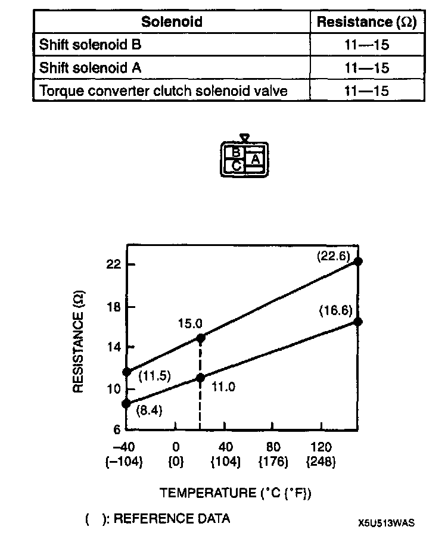
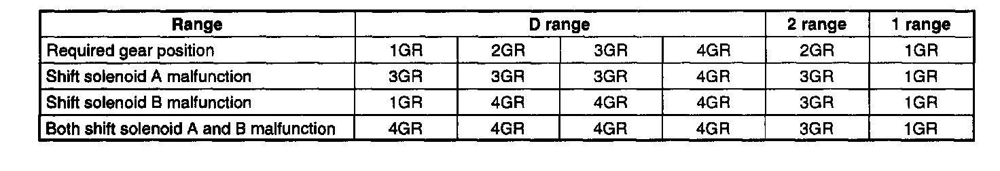
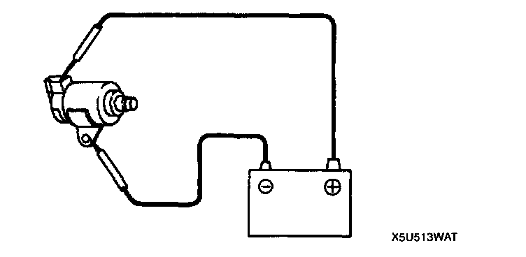

Shift Solenoid: Testing and Inspection
SOLENOID VALVES INSPECTIONInspection Of Solenoid Valves
1. Inspect the on-board diagnostic trouble code.
2. Disconnect the negative battery cable.
3. Remove the solenoid valves.
Note: Resistance value solenoid valve varies with temperature. Normal resistance value occurs when the temperature is 20°C (68°F), but it may be abnormal at high temperatures. Therefore, do not determine the resistance value only at 20°C (68°F).

4. Measure the resistance between terminal of the solenoid valve.

Fail Safe Function
5. If not correct, replace the solenoid valves.
6. Install the solenoid valves.
7. Connect the solenoid valve connector.
8. Connect the negative battery cable.
Operating Inspection
1. Disconnect the negative battery cable.
2. Remove the solenoid valves.

3. Inspect the voltage at terminals A to C and listen for a "click" sound at all solenoid valves.
4. If the "click" is not heard, replace the solenoid valve.
5. Install the solenoid valves.
6. Connect the solenoid valve connector.
7. Connect the negative battery cable.